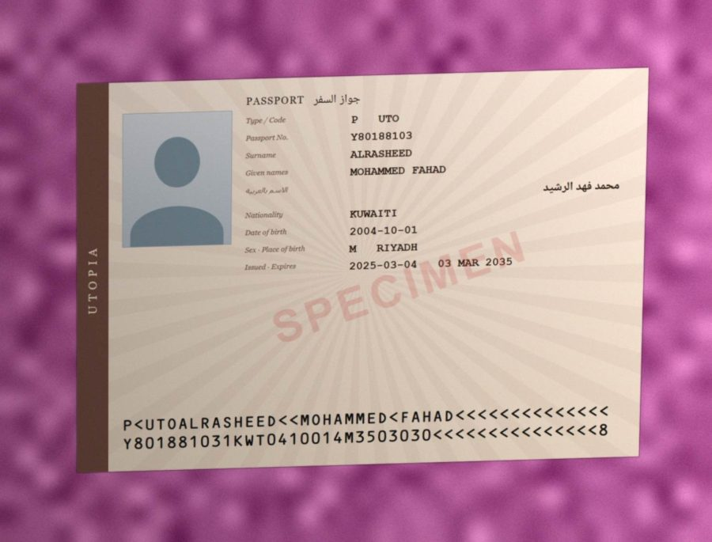
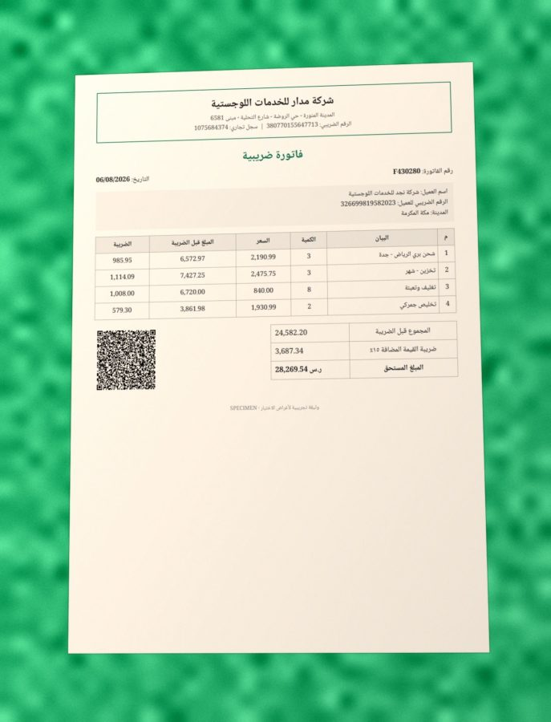
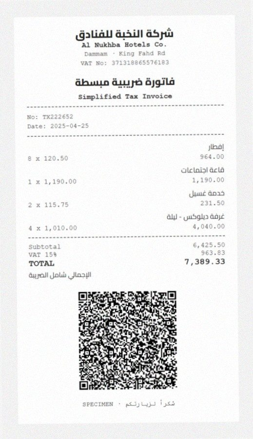
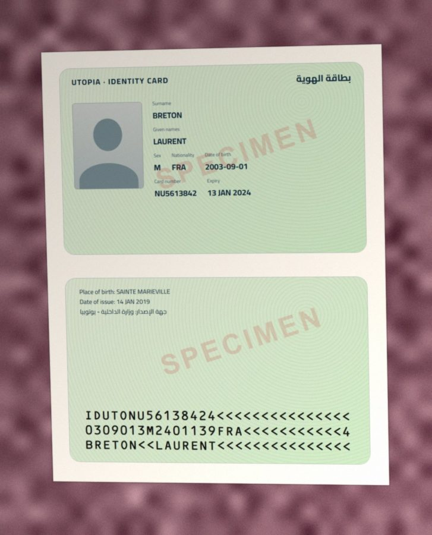
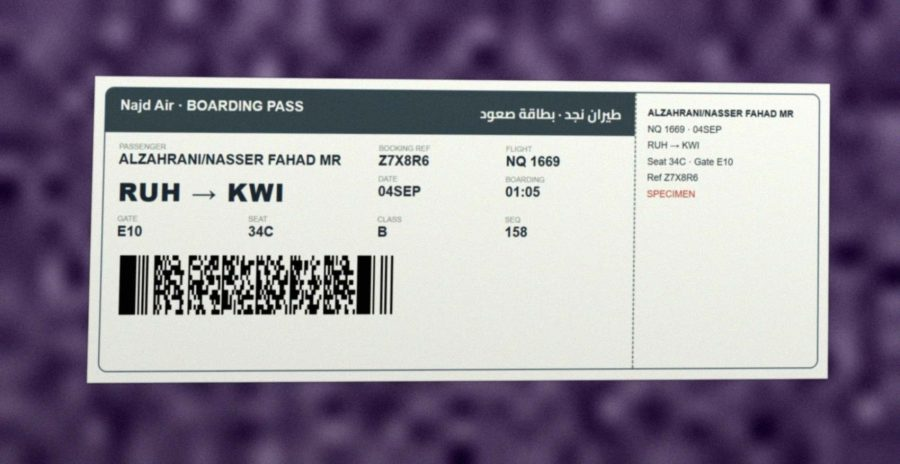
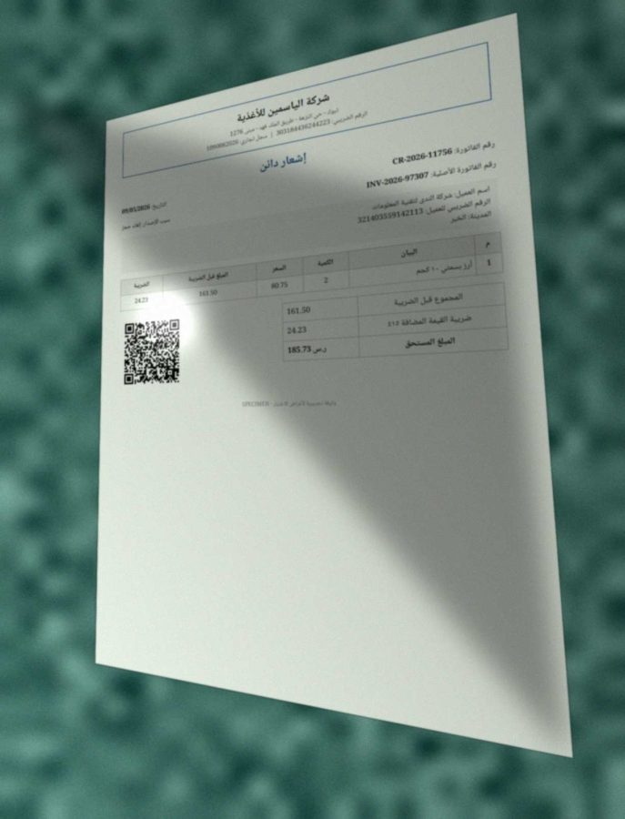

Computer vision · OCR · Saudi e-invoicingرؤية حاسوبية · قراءة النصوص · الفوترة الإلكترونية السعودية
Read IDs and invoices from a photo, and know which fields you can trustاقرأ الهويات والفواتير من صورة، واعرف أي البيانات يمكنك الوثوق بها
A reader for the documents Saudi businesses handle every day: passports, ID cards, visas, ZATCA tax invoices and boarding passes. Every field it returns carries a status: proven, read but unproven, or sent to a person.قارئ للمستندات التي تتعامل معها الشركات السعودية يوميًا: جوازات السفر وبطاقات الهوية والتأشيرات وفواتير هيئة الزكاة والضريبة والجمارك وبطاقات صعود الطائرة. وكل معلومة يستخرجها تأتي بحالتها: مُثبتة، أو مقروءة دون إثبات، أو محالة لشخص يراجعها.
100%of the fields it marks as verified are correct,من البيانات التي يعتبرها مُثبتة صحيحة،across 600 test documents that were never used while building it.على 600 مستند اختبار لم تُستخدم أثناء بنائه.
64%of all fields come back verified and can go straight into your system. The rest are flagged with the reason, so a person checks only those.من كل البيانات تخرج مُثبتة ويمكن إدخالها في نظامك مباشرة. والباقي يُعلَّم مع السبب، فيراجع الموظف هذه فقط.
99.9%of the passport fields it marked as verified on real phone video were correct (9,066 fields, 3,315 frames). Reading the whole MRZ exactly, it got 40.3% of frames: behind the commercial Dynamsoft SDK (48.3%), far ahead of the open-source tools (7.3% and 0.3%).من بيانات الجوازات التي اعتبرها مُثبتة في فيديوهات جوال حقيقية كانت صحيحة (9,066 معلومة، 3,315 لقطة). أما قراءة السطرين الآليين كاملين بلا خطأ فنجح فيها في 40.3% من اللقطات: أقل من مكتبة Dynamsoft التجارية (48.3%)، وأعلى بكثير من الأدوات المفتوحة المصدر (7.3% و0.3%).
100%
verified fields that are correctمن البيانات المُثبتة صحيحة
3076 of 3076 fields3076 من 3076 معلومة
64%
fields that need no personمن البيانات لا تحتاج مراجعة
4834 fields in total4834 معلومة إجمالًا
99.7%
documents sorted into the right typeمن المستندات صُنّفت في نوعها الصحيح
10 types, including “not a supported document”10 أنواع، منها «مستند غير مدعوم»
4.3 sث
to read one documentلقراءة المستند الواحد
on average, across all 600في المتوسط، على الـ 600 كلها
How it reads a documentكيف يقرأ المستند
The reader relies first on what the documents themselves can prove. Passports, invoices and boarding passes all carry machine-readable data with error checks built in. The text recognition is cross-checked against that data.يعتمد القارئ أولًا على ما تستطيع المستندات نفسها إثباته. فجوازات السفر والفواتير وبطاقات الصعود كلها تحمل بيانات مقروءة آليًا فيها وسائل تحقق مدمجة. ثم يُطابَق النص المقروء بهذه البيانات.
Flatten the photoتسوية الصورة
Finds the document's four corners and straightens it, like a scanner app.يجد زوايا المستند الأربع ويعدّله كأنه ممسوح ضوئيًا.
Decode barcodesقراءة الباركود
ZATCA invoice QR codes and IATA boarding-pass barcodes. Both have built-in error correction.رمز QR في فواتير الزكاة وباركود بطاقات الصعود، وكلاهما فيه تصحيح أخطاء مدمج.
Read the text twiceقراءة النص مرتين
Two open-source models: PP-OCRv6 for Latin text and numbers, PP-OCRv5 Arabic for Arabic.نموذجان مفتوحا المصدر: PP-OCRv6 للنص اللاتيني والأرقام، وPP-OCRv5 للعربية.
Check against the standardالمطابقة مع المعيار
Passport check digits (ICAO 9303), ZATCA QR values, VAT = 15%, line items adding up.أرقام التحقق في الجواز (ICAO 9303)، وقيم QR الضريبي، والضريبة = 15%، ومجموع البنود.
Give every field a statusحالة لكل معلومة
Verified, read or review, with the reason. Nothing uncertain is passed off as certain.مُثبتة أو مقروءة أو للمراجعة، مع السبب. لا يُقدَّم شيء غير مؤكد على أنه مؤكد.
✓VerifiedمُثبتProven independently: a check digit, an error-corrected barcode, the invoice arithmetic, or two separate reads that agree.مُثبتة بشكل مستقل: رقم تحقق، أو باركود مصحَّح الأخطاء، أو حساب الفاتورة، أو قراءتان منفصلتان متطابقتان.
?ReadمقروءRead once and looks right, but nothing confirms it. A person glances at it.قُرئت مرة وتبدو صحيحة، لكن لا شيء يؤكدها. يلقي الموظف نظرة عليها.
!ReviewمراجعةA check failed, two readings disagree, or the field was not found.فشل تحقق، أو اختلفت قراءتان، أو لم توجد المعلومة.
Examples from the test setأمثلة من مجموعة الاختبار
Real output on test images. Every document is a synthetic SPECIMEN: the people, companies and VAT numbers are invented, and the passports are issued by “Utopia”, the specimen country of the ICAO standard.نتائج فعلية على صور الاختبار. كل المستندات نماذج تجريبية (SPECIMEN): الأشخاص والشركات والأرقام الضريبية مختلَقة، والجوازات صادرة من «يوتوبيا»، الدولة التجريبية في معيار ICAO.

Passportجواز سفر
Phone photoصورة بالجوال · a layout it never saw during developmentتصميم لم يره أثناء التطوير · 5.06 sث
Fieldالمعلومة
Valueالقيمة
Statusالحالة
Sourceالمصدر
Document numberرقم الوثيقة
Y80188103
✓Verifiedمُثبت
MRZالمنطقة المقروءة آليًا
Surnameاللقب
ALRASHEED
✓Verifiedمُثبت
MRZالمنطقة المقروءة آليًا
Given namesالاسم
MOHAMMED FAHAD
✓Verifiedمُثبت
MRZالمنطقة المقروءة آليًا
Nationalityالجنسية
KWT
?Readمقروء
MRZالمنطقة المقروءة آليًا
Date of birthتاريخ الميلاد
2004-10-01
✓Verifiedمُثبت
MRZالمنطقة المقروءة آليًا
Sexالجنس
M
?Readمقروء
MRZالمنطقة المقروءة آليًا
Expiry dateتاريخ الانتهاء
2035-03-03
✓Verifiedمُثبت
MRZالمنطقة المقروءة آليًا
Issuing stateجهة الإصدار
UTO
✓Verifiedمُثبت
MRZالمنطقة المقروءة آليًا
Name in Arabicالاسم بالعربية
محمد فهد الرشيد
?Readمقروء
Printed textالنص المطبوع

Tax invoiceفاتورة ضريبية
Phone photoصورة بالجوال · a layout it never saw during developmentتصميم لم يره أثناء التطوير · 12.99 sث
Fieldالمعلومة
Valueالقيمة
Statusالحالة
Sourceالمصدر
Invoice numberرقم الفاتورة
F430280
?Readمقروء
Printed textالنص المطبوع
Sellerالبائع
شركة مدار للخدمات اللوجستية
✓Verifiedمُثبت
ZATCA QRرمز QR الضريبي
Seller VAT no.الرقم الضريبي للبائع
380770155647713
✓Verifiedمُثبت
ZATCA QRرمز QR الضريبي
Issue dateتاريخ الإصدار
2026-08-06
✓Verifiedمُثبت
ZATCA QRرمز QR الضريبي
Totalالإجمالي
28269.54
✓Verifiedمُثبت
ZATCA QRرمز QR الضريبي
VAT 15%ضريبة القيمة المضافة
3687.34
✓Verifiedمُثبت
ZATCA QRرمز QR الضريبي
Subtotalالإجمالي قبل الضريبة
24582.20
✓Verifiedمُثبت
ZATCA QRرمز QR الضريبي
Buyer VAT no.الرقم الضريبي للمشتري
—
!Reviewمراجعة
Printed textالنص المطبوع
Line itemsبنود الفاتورة
—
!Reviewمراجعة
Printed textالنص المطبوع

Simplified tax invoiceفاتورة ضريبية مبسطة
Scannedممسوح ضوئيًا · 4.24 sث
Fieldالمعلومة
Valueالقيمة
Statusالحالة
Sourceالمصدر
Invoice numberرقم الفاتورة
TX222652
?Readمقروء
Printed textالنص المطبوع
Sellerالبائع
شركة النخبة للفنادق
✓Verifiedمُثبت
ZATCA QRرمز QR الضريبي
Seller VAT no.الرقم الضريبي للبائع
371318865576183
✓Verifiedمُثبت
ZATCA QRرمز QR الضريبي
Issue dateتاريخ الإصدار
2025-04-25
✓Verifiedمُثبت
ZATCA QRرمز QR الضريبي
Totalالإجمالي
7389.33
✓Verifiedمُثبت
ZATCA QRرمز QR الضريبي
VAT 15%ضريبة القيمة المضافة
963.83
✓Verifiedمُثبت
ZATCA QRرمز QR الضريبي
Subtotalالإجمالي قبل الضريبة
6425.50
✓Verifiedمُثبت
ZATCA QRرمز QR الضريبي
Line itemsبنود الفاتورة
4 lines
✓Verifiedمُثبت
Arithmeticالحساب

ID cardبطاقة هوية
Phone photoصورة بالجوال · 3.7 sث
Fieldالمعلومة
Valueالقيمة
Statusالحالة
Sourceالمصدر
Document numberرقم الوثيقة
NU5613842
✓Verifiedمُثبت
MRZالمنطقة المقروءة آليًا
Surnameاللقب
BRETON
✓Verifiedمُثبت
MRZالمنطقة المقروءة آليًا
Given namesالاسم
LAURENT
✓Verifiedمُثبت
MRZالمنطقة المقروءة آليًا
Nationalityالجنسية
FRA
✓Verifiedمُثبت
MRZالمنطقة المقروءة آليًا
Date of birthتاريخ الميلاد
2003-09-01
✓Verifiedمُثبت
MRZالمنطقة المقروءة آليًا
Sexالجنس
M
?Readمقروء
MRZالمنطقة المقروءة آليًا
Expiry dateتاريخ الانتهاء
2024-01-13
✓Verifiedمُثبت
MRZالمنطقة المقروءة آليًا
Issuing stateجهة الإصدار
UTO
?Readمقروء
MRZالمنطقة المقروءة آليًا

Boarding passبطاقة صعود الطائرة
Phone photoصورة بالجوال · 2.21 sث
Fieldالمعلومة
Valueالقيمة
Statusالحالة
Sourceالمصدر
Passengerالمسافر
ALZAHRANI/NASSER
✓Verifiedمُثبت
Barcodeالباركود
Booking referenceرقم الحجز
Z7X8R6
✓Verifiedمُثبت
Barcodeالباركود
Fromمن
RUH
✓Verifiedمُثبت
Barcodeالباركود
Toإلى
KWI
✓Verifiedمُثبت
Barcodeالباركود
Airline codeرمز شركة الطيران
NQ
✓Verifiedمُثبت
Barcodeالباركود
Flightرقم الرحلة
1669
✓Verifiedمُثبت
Barcodeالباركود
Day of yearيوم الرحلة في السنة
247
✓Verifiedمُثبت
Barcodeالباركود
Seatالمقعد
34C
✓Verifiedمُثبت
Barcodeالباركود
Check-in no.رقم تسجيل الوصول
158
✓Verifiedمُثبت
Barcodeالباركود
Cabinالدرجة
B
✓Verifiedمُثبت
Barcodeالباركود

Credit noteإشعار دائن
Difficult photoصورة صعبة · a layout it never saw during developmentتصميم لم يره أثناء التطوير · 3.49 sث
Fieldالمعلومة
Valueالقيمة
Statusالحالة
Sourceالمصدر
Invoice numberرقم الفاتورة
CR-2026-117563
?Readمقروء
Printed textالنص المطبوع
Original invoiceالفاتورة الأصلية
—
!Reviewمراجعة
Printed textالنص المطبوع
Sellerالبائع
شركة الياسمين للأغذية
✓Verifiedمُثبت
ZATCA QRرمز QR الضريبي
Seller VAT no.الرقم الضريبي للبائع
303184436244223
✓Verifiedمُثبت
ZATCA QRرمز QR الضريبي
Issue dateتاريخ الإصدار
2026-05-09
✓Verifiedمُثبت
ZATCA QRرمز QR الضريبي
Totalالإجمالي
185.73
✓Verifiedمُثبت
ZATCA QRرمز QR الضريبي
VAT 15%ضريبة القيمة المضافة
24.23
✓Verifiedمُثبت
ZATCA QRرمز QR الضريبي
Subtotalالإجمالي قبل الضريبة
161.50
✓Verifiedمُثبت
ZATCA QRرمز QR الضريبي
Buyer VAT no.الرقم الضريبي للمشتري
321403559142113
?Readمقروء
Printed textالنص المطبوع
Line itemsبنود الفاتورة
—
!Reviewمراجعة
Printed textالنص المطبوع
Results by document typeالنتائج حسب نوع المستند
600 test documents, 60 of each type: 30% scans, 45% phone photos, 25% difficult photos (tilted, blurred, shadowed, with glare). The bar shows what share of fields came back verified, read or for review; the number on the right is the share of verified fields that are correct.600 مستند اختبار، 60 من كل نوع: 30% ممسوحة ضوئيًا، و45% صور بالجوال، و25% صور صعبة (مائلة ومهزوزة وفيها ظل ولمعان). يوضح الشريط نسبة البيانات المُثبتة والمقروءة والمحالة للمراجعة، والرقم على اليمين نسبة البيانات المُثبتة الصحيحة.
VerifiedمُثبتةReadمقروءةReviewمراجعة
Boarding passبطاقة صعود الطائرة
100%
Credit noteإشعار دائن
100%
Debit noteإشعار مدين
100%
ID cardبطاقة هوية
100%
Travel document (TD2)وثيقة سفر (TD2)
100%
Passportجواز سفر
100%
Simplified tax invoiceفاتورة ضريبية مبسطة
100%
Tax invoiceفاتورة ضريبية
100%
Visaتأشيرة
100%
Show as a tableاعرض كجدول
Typeالنوع
Fieldsالبيانات
Verifiedمُثبتة
Verified correctالمُثبتة الصحيحة
Readمقروءة
Read correctالمقروءة الصحيحة
Reviewمراجعة
Boarding passبطاقة صعود الطائرة
600
540
100%
4
100%
56
Credit noteإشعار دائن
593
292
100%
206
84.0%
95
Debit noteإشعار مدين
600
305
100%
206
88.3%
89
ID cardبطاقة هوية
513
270
100%
125
94.4%
118
Travel document (TD2)وثيقة سفر (TD2)
514
353
100%
155
96.1%
6
Passportجواز سفر
514
350
100%
152
90.8%
12
Simplified tax invoiceفاتورة ضريبية مبسطة
480
308
100%
104
86.5%
68
Tax invoiceفاتورة ضريبية
540
327
100%
141
89.4%
72
Visaتأشيرة
480
331
100%
129
100%
20
By image qualityحسب جودة الصورة
Scannedممسوح ضوئيًا
100%
Phone photoصورة بالجوال
100%
Difficult photoصورة صعبة
100%
Worse photos mean fewer verified fields, not more wrong ones: the reader sends what it cannot prove to a person.كلما ساءت الصورة قلّت البيانات المُثبتة، لا زادت الأخطاء: القارئ يحيل ما لا يستطيع إثباته إلى شخص.
Layouts it never sawتصميمات لم يرها
One design per family (a passport, an Arabic-only invoice, a mobile boarding pass) was kept out of development and used only in this test.تصميم واحد من كل عائلة (جواز سفر، وفاتورة بالعربية فقط، وبطاقة صعود للجوال) أُبعد عن التطوير واستُخدم في هذا الاختبار فقط.
Fieldsالبيانات
Verified correctالمُثبتة الصحيحة
Need no personلا تحتاج مراجعة
Designs used in developmentتصميمات استُخدمت في التطوير
3719
100%
64%
Designs never seenتصميمات لم يرها
1115
100%
61%
Real photos: passports filmed with a phoneصور حقيقية: جوازات سفر مصوّرة بالجوال
Synthetic tests can flatter. So the passport reader was also scored on MIDV-500, a public set of phone videos of real specimen passports from 12 countries, filmed on a table, in hand, on a keyboard, in clutter and partly out of frame. The comparison uses Dynamsoft's published 3,315-frame benchmark and its scores.الاختبارات الاصطناعية قد تجامل. لذلك قِيس قارئ الجوازات أيضًا على MIDV-500، وهي مجموعة عامة من فيديوهات جوال لجوازات سفر نموذجية حقيقية من 12 دولة، مصوّرة على طاولة وفي اليد وعلى لوحة مفاتيح ووسط أغراض وخارج الإطار جزئيًا. المقارنة على معيار Dynamsoft المنشور من 3,315 لقطة وبنتائجه.
Frames where the whole MRZ (88 characters) is read exactly rightاللقطات التي قُرئ فيها السطران الآليان (88 حرفًا) بلا أي خطأ
This reader (open source)هذا القارئ (مفتوح المصدر)
of frames it marks as fully proven have all five key fields rightمن اللقطات التي يعتبرها مُثبتة بالكامل بياناتها الخمس الأساسية صحيحة
5 wrong out of 822 (number, surname, given names, birth, expiry)5 خطأ من 822 (الرقم واللقب والاسم والميلاد والانتهاء)
99.9%
of verified passport fields are correctمن بيانات الجوازات المُثبتة صحيحة
9,066 verified fields9,066 معلومة مُثبتة
25%
of frames proven with no person neededمن اللقطات أُثبتت دون حاجة لموظف
the rest are flagged for reviewوالباقي يُحال للمراجعة
Where it falls short: raw reading on blurred, steep or partly hidden frames. Of the 3,315 frames it fully proves about one in four; the rest go to a person.أين يقصر: القراءة نفسها في اللقطات المهزوزة أو المائلة بشدة أو المحجوبة جزئيًا. من 3,315 لقطة يُثبت بالكامل حوالي لقطة من كل أربع، والباقي يذهب لموظف.
By filming conditionحسب ظروف التصوير
Framesاللقطات
Exact MRZقراءة تامة
Provenمُثبتة
clutterوسط أغراض
720
35.4%
23.2%
in handفي اليد
720
37.4%
18.6%
keyboardعلى لوحة مفاتيح
720
26.0%
11.8%
partly out of frameخارج الإطار جزئيًا
435
19.8%
11.9%
tableعلى طاولة
720
74.7%
53.3%
How this helps a businessكيف يفيد هذا الشركات
Travel agenciesوكالات السفر
Photograph a passport, get booking-ready passenger data. Names, numbers and dates are checked before they reach the airline.صوّر الجواز واحصل على بيانات المسافر جاهزة للحجز. الأسماء والأرقام والتواريخ مُراجَعة قبل أن تصل لشركة الطيران.
Accounts payableالحسابات الدائنة
Supplier invoices are read and matched to their ZATCA QR. A printed total that differs from the QR is flagged as possible tampering.تُقرأ فواتير الموردين وتُطابَق مع رمز QR الضريبي. وإذا اختلف الإجمالي المطبوع عن الرمز تُعلَّم كاحتمال تلاعب.
Hotels and onboardingالفنادق وتسجيل العملاء
ID cards and visas at check-in or onboarding, with expiry dates read and proven.بطاقات الهوية والتأشيرات عند تسجيل الوصول أو فتح الحساب، مع قراءة تاريخ الانتهاء وإثباته.
Good to knowمن المهم أن تعرف
The main test set is synthetic: documents I generated in 14 designs, then degraded to look like scans and phone photos. Real customer documents would be needed to confirm the automation rate for a specific business. The verified-field precision does not depend on the design, because it comes from checks that standards define.مجموعة الاختبار الرئيسية اصطناعية: مستندات ولّدتها بـ 14 تصميمًا ثم شوّهتها لتشبه المسح الضوئي وصور الجوال. لتأكيد نسبة الأتمتة لشركة معيّنة نحتاج مستنداتها الحقيقية. أما دقة البيانات المُثبتة فلا تعتمد على التصميم، لأنها تأتي من تحققات تحددها المعايير.
Some fields can never be proven from the image alone: an invoice number, a buyer's VAT number, or a name in Arabic. They come back as “read”, and their accuracy is reported separately (90.8%).بعض البيانات لا يمكن إثباتها من الصورة وحدها: رقم الفاتورة، والرقم الضريبي للمشتري، والاسم بالعربية. تأتي بحالة «مقروءة»، ودقتها معروضة منفصلة (90.8%).
A passport check digit cannot tell G from 6, S from 8 or L from 1: in its arithmetic they are the same. On real photos two misreads can also cancel out (BD0002028 read as 800002028). So a document number is verified only when the same number is also printed on the page.رقم التحقق في الجواز لا يفرّق بين G و6، ولا S و8، ولا L و1، فهي في حسابه متساوية. وفي الصور الحقيقية قد يلغي خطآن أحدهما الآخر (BD0002028 قُرئ 800002028). لذلك لا يُعتبر رقم الوثيقة مُثبتًا إلا إذا وُجد نفس الرقم مطبوعًا في الصفحة.
A valid ZATCA QR proves what the issuer encoded, not that the invoice is genuine. Checking the cryptographic stamp of phase-2 invoices needs ZATCA's certificates and is not part of this project.رمز QR السليم يثبت ما وضعه مُصدر الفاتورة، لا أن الفاتورة أصلية. التحقق من الختم المشفّر لفواتير المرحلة الثانية يحتاج شهادات هيئة الزكاة وليس ضمن هذا المشروع.
Technical detailsالتفاصيل التقنية
OCR: RapidOCR (ONNX Runtime) — PP-OCRv6 small detection and Latin recognitionللكشف والتعرف اللاتيني; PP-OCRv5 mobile Arabic recognitionللتعرف العربي. Each text line keeps both readings; on the MRZ, check digits choose between them.كل سطر يحتفظ بالقراءتين، وفي المنطقة الآلية تختار أرقام التحقق بينهما.
Geometry: Canny edges, contour and convex-hull search, perspective warp (OpenCV); text rows rebuilt after undoing the page angle.الهندسة: حواف Canny، والبحث عن الحدود والغلاف المحدب، وتصحيح المنظور (OpenCV)، وإعادة بناء الأسطر بعد إلغاء ميل الصفحة.
Barcodes: zxing-cpp (QR, PDF417, Aztec). Standards implemented from the specifications: ICAO 9303 (TD1, TD2, TD3, MRV-A/B), ZATCA TLV QR (phases 1 and 2), IATA BCBP.الباركود: zxing-cpp (QR وPDF417 وAztec). المعايير مطبّقة من مواصفاتها: ICAO 9303 (TD1 وTD2 وTD3 وMRV-A/B)، وQR الضريبي بصيغة TLV (المرحلتان 1 و2)، وIATA BCBP.
Test data: HTML templates rendered with headless Chrome, then scan and phone-photo degradation (perspective, blur, noise, shadow, glare, JPEG). Dev and test splits use different seeds; 3 designs are held out of development.بيانات الاختبار: قوالب HTML تُرسم بمتصفح Chrome دون واجهة، ثم تشويه يحاكي المسح وتصوير الجوال (منظور وتشويش وضوضاء وظل ولمعان وضغط JPEG). مجموعتا التطوير والاختبار ببذور مختلفة، و3 تصميمات مُبعدة عن التطوير.